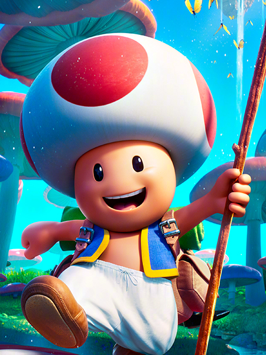
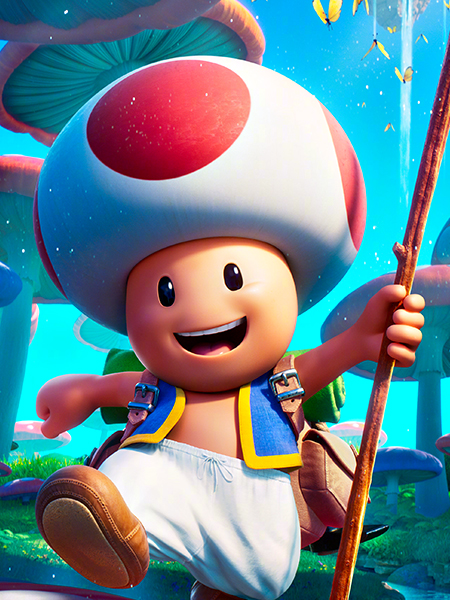

Mario marcou a história dos games em sua famosa série. Em 1980, após uma tentativa sem sucesso da Nintendo ao fazer um jogo baseado no desenho Popeye, Miyamoto, considerado o pai do Mario, foi então solicitado pela empresa para projetar um novo jogo baseado em suas próprias ideias. Mario foi criado pelo lendário game designer Shigeru Miyamoto, que usou Popeye como inspiração para criar o encanador que precisa salvar Paulina das garras de um gorila raivoso em Donkey Kong, de 1991.
VoltarA Princesa Peach Cogumelo (ピーチ姫 Pīchi-hime) é uma personagem fictícia da série de videogames Super Mario Bros., produzido pela Nintendo. Ela é a princesa do também fictício Reino dos Cogumelos e por diversas vezes faz o papel de donzela em apuros da série, sendo constantemente salva por Mario, a quem ela é apaixonada.
VoltarNão se sabe exatamente quando e onde Bowser nasceu, mas desde criança, ele já possuía um castelo, como visto em Yoshi’s Story 2 (2007). Logo nesse primeiro encontro com Mario, o vilão já foi derrotado.
Voltar
Não se sabe exatamente quando e onde Bowser nasceu, mas desde criança, ele já possuía um castelo, como visto em Yoshi’s Story 2 (2007). Logo nesse primeiro encontro com Mario, o vilão já foi derrotado.
Voltar
Não se sabe exatamente quando e onde Bowser nasceu, mas desde criança, ele já possuía um castelo, como visto em Yoshi’s Story 2 (2007). Logo nesse primeiro encontro com Mario, o vilão já foi derrotado.
VoltarFeito por Adrian.F.C
Intagran:adrian_felipe_cavalli